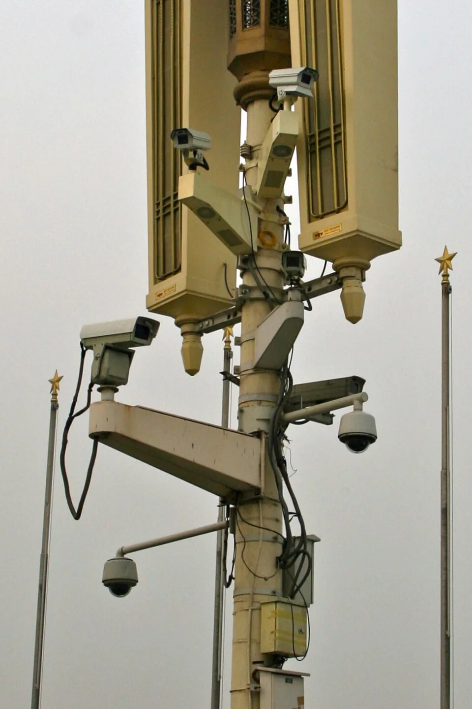

Financiada con impuestos a «las empresas relevantes» o subiendo el impuesto a las ganancias de capital. · darioamodei.com · Foto: TechCrunch, CC BY 2.0.
DIAPO N.º 02AMODEI
Amodei, sobre el poder del Estado y sus límites
«La IA amenaza con alterar este equilibrio y, a la vez, eleva drásticamente lo que está en juego. Pero si reaccionamos rápido y estamos a la altura, podemos usar la IA para crear un mundo con garantías de libertad más robustas y duraderas que nunca antes.»
«Policy on the AI Exponential», sección 4 · traducción propia
Hoy: un modelo económico que predice lo contrario.
DIAPO N.º 03EL GANCHO
El paper · NBER Working Paper 35336 · junio de 2026
Cuanto más se automatiza, más barata resulta la represión frente al impuesto.
Por qué
Comprar la paz con redistribución cuesta una fracción del ingreso que crece con la automatización. Comprarla con represión cuesta una fracción fija. Con suficiente capital, la fija gana.
Y de ahí sale el resultado que interesa a esta semana
Si la sociedad parte siendo una democracia, llega un punto en que a los dueños del capital les sale más barato derrocarla que pagar sus impuestos.
No porque aparezca un demagogo. Por aritmética.
DIAPO N.º 05LA TESIS
Sección 2 · La economía del modelo
Automatizar es mover una tarea del trabajo al capital.
La misma torta, repartida distinto: cada tarea automatizada baja la parte del trabajo.
DIAPO N.º 06AUTOMATIZAR
Hallazgo 1 · Un problema de acción colectiva
Cada empresa automatiza por su cuenta. El riesgo de revuelta lo pagan todas.
Las demás se contienen
Las demás automatizan
Me contengo
Riesgo bajogano lo normal
Pierdo mercadoy el riesgo sube igual
Automatizo
Gano másel riesgo casi no cambia
Revuelta probableperdemos todos
Automatizar conviene hagan lo que hagan las demás. La salida es alguien que obligue a todas a la vez: en el modelo, el Estado del capital, que protege a los capitalistas de sí mismos.
DIAPO N.º 07ACCIÓN COLECTIVA
El resultado central · Lema 4 y Proposición 6
Las dos curvas se cruzan una sola vez.
Figura 3 del paper, recalculada con sus ecuaciones y parámetros. «Lo que le cuesta»: cuánto pierde el capital frente a un mundo sin amenaza de revuelta, como porcentaje de lo que ganaría en ese mundo.
DIAPO N.º 08EL CRUCE
La objeción de Amodei · «hipercrecimiento con hiperdesigualdad»
¿Y si la IA hace crecer tanto la torta que alcanza para todos?
La torta crece casi cuatro veces, y el precio de la paz sube de 42% a 48% de ella; en el límite, la mitad (Proposición 5). Alcanzar, alcanza. Pero ahora reprimir sale más barato.
DIAPO N.º 09¿ALCANZA?
El supuesto que la IA rompe · Sección 6
En el modelo, reprimir cuesta una fracción fija. La IA la está bajando.
Si reprimir baja de 60% a 50% del producto, el umbral llega con menos de la mitad del capital. Los autores: «si es así, nuestra conclusión principal se vería reforzada».
DIAPO N.º 10EL SUPUESTO
Lo que la IA abarata · Amodei, junio de 2026

«La IA poderosa, en las manos equivocadas, podría ser la herramienta definitiva de la autocracia.»
Nadie tiene que aceptar disparar: drones que obedecen órdenes ilegales.
La protesta se ve antes de coordinarse: vigilancia a escala de cada ciudadano.
Ya ocurre. En China, más protestas llevan a comprar más reconocimiento facial, y esa compra reduce las protestas siguientes.
Beraja, Kao, Yang y Yuchtman, «AI-tocracy», QJE 2023. · Foto: Tiananmen, 2009, Andrey Belenko, CC BY 2.0.
DIAPO N.º 11LO QUE ABARATA
Parte II · Un test empírico
02
Los radiólogos que no desaparecieron
La predicción más citada sobre automatización con IA tenía nombre, oficio y plazo. El plazo venció.
DIAPO N.º 12PARTE II
Geoffrey Hinton · Toronto, octubre de 2016
La predicción.
«Geoff Hinton: On Radiology» Creative Destruction Lab · 1 min 24 s
«People should stop training radiologists now.»«Hay que dejar de formar radiólogos ya»: Hinton, en el minuto 0:29. Plazo que dio: 5 años, «quizás 10».
Machine Learning and the Market for Intelligence, Rotman School, 27 oct 2016; video publicado el 24 nov 2016. · youtube.com/watch?v=2HMPRXstSvQ
DIAPO N.º 13LA PREDICCIÓN
Plazas de residencia en radiología diagnóstica · Estados Unidos, 2010–2026
El plazo venció. Las plazas para formarlos, en récord.
Plazas ofrecidas en el Match del NRMP (PGY-1 + PGY-2), Results and Data 2010–2026, tabla 3. En 2017 radiología intervencional pasa a tener plazas propias.
DIAPO N.º 14EL PLAZO
El giro · 167 centros de imágenes, 2018 → 2024
Más radiólogos. El radiólogo promedio lee lo mismo.
Entonces
Si la productividad del radiólogo promedio no subió, ¿qué explica la demanda?
Zamani et al., «US Radiology Imaging and Workforce Volumes 2017–2024», JACR 2026, doi:10.1016/j.jacr.2025.12.026. Registro del ACR, 19 estados: no es una muestra nacional, ni un estudio sobre IA.
DIAPO N.º 15EL GIRO
Explicaciones alternativas
La escasez tiene causas que no son la IA.
Radiología = diagnóstica + intervencional. Fuente: NRMP, 2010 y 2025.
Tope de 1997
Medicare congeló las residencias que financia. Las primeras mil plazas nuevas se aprobaron en 2021.
Población
Más viejos, más exámenes de imágenes.
Abandono
Los que dejan la profesión: de 1,1% a 2,5% al año, 2014–2022.
NRMP · Balanced Budget Act de 1997 y Consolidated Appropriations Act de 2021, §126 (plazas usadas desde 2023) · E. Rula, «The Radiologist Shortage», ACR Bulletin, feb 2026.
DIAPO N.º 16LAS CAUSAS
Huang sobre Hinton · The Ezra Klein Show, 23 de septiembre de 2026
¿«Todavía no» es lo mismo que «estaba equivocado»?
The Ezra Klein Show · Jensen Huang minuto 57:57 a 59:33
Hablaba sólo del análisis de imágenes. Se equivocó en los plazos, no en la dirección.
Todavía no
En datos de otro hospital, un modelo cayó hasta 12 puntos de AUC.
Lo de Hinton es paráfrasis del periodista a partir de un correo: S. Lohr, NYT, 14 may 2025. · Zech et al., PLoS Medicine, 2018. · El clip reproduce el video de 2016 en 58:36.
DIAPO N.º 17¿TODAVÍA NO?
El debate · Tres bandos
¿Quién leyó mejor el caso?
A favor de Huang
La demanda de radiólogos subió, no bajó.1.239 plazas en 2026, récord · Mayo +55%
Se adoptó la IA y el empleo igual creció.Mayo usa más de 250 modelos
Diagnosticar no es leer imágenes.Huang con Klein, 2026
A favor de Hinton
La productividad no se movió: la IA aún no llega a la sala.49,1 → 49,4 exámenes al día · JACR
La escasez es institucional; no prueba complementariedad.Tope de 1997 · +29% contra +69%
Falló el plazo; la dirección está por verse.Hinton al NYT, 2025
Ambos preguntan mal
Discuten empleos; el paper mira el reparto entre capital y trabajo.Sección 3
Tratan la automatización como destino; el paper, como decisión.Secciones 4 y 5
Las tareas nuevas no aparecen solas.Sección 7
DIAPO N.º 18EL DEBATE
Parte III
03
Del modelo a los duelos
Seis personas del mapa del Times, tres peleas. Cada una es una versión con nombre propio de algo que el modelo acaba de mostrar.
DIAPO N.º 19LOS DUELOS
El puente · Lo que vimos, con nombre y apellido
Tres duelos, tres láminas del modelo.
En el modelo
El duelo
La pregunta
Cada empresa automatiza por su cuenta; el riesgo lo pagan todas. Lámina 7
Huang contra Amodei
Lo de Hugging Face, ¿es problema de una empresa o de todas?
La salida es alguien que obligue a todas a la vez. Lámina 7
Hawley contra Altman
¿Quién obliga: una ley nueva o la propia industria?
Alcanzar, alcanza; pero pasado el umbral, reprimir sale más barato. Láminas 8 y 9
Sanders contra Musk
Impuestos o cheques prometidos: ¿quién paga la paz social?
DIAPO N.º 20EL PUENTE
Jensen Huang, con Ezra Klein · The New York Times, 23 de septiembre de 2026
«Una torta de cinco capas.»
Primera pregunta de la hoja de duelo
¿En qué capa está tu personaje, y qué vende? Si es político: ¿a quién le habla?
DIAPO N.º 21LA TORTA
Seis personajes · Tres duelos · Cada grupo debate una vez
Las tres mociones.
A favor
Moción
En contra
Jensen Huang Nvidia
«Lo de Hugging Face fue un accidente de ingeniería, no una advertencia.»
Dario Amodei Anthropic
Josh Hawley Senado, republicano
«Hacen falta leyes nuevas para que las empresas de IA respondan por sus daños.»
Sam Altman OpenAI
Bernie Sanders Senado, independiente
«Las ganancias de la IA tienen que llegar a la gente por impuestos, no por la promesa de sus dueños.»
Elon Musk SpaceX, Tesla
Los seis salen del mapa de E. Martin y R. Lieberman, «How A.I. Risks Are Splitting Silicon Valley and Washington», The New York Times, 15 de septiembre de 2026, que leyeron en la clase 7.
DIAPO N.º 22LAS MOCIONES
Cómo se juega
Ahora eliges personaje. Después del recreo, debates como él.